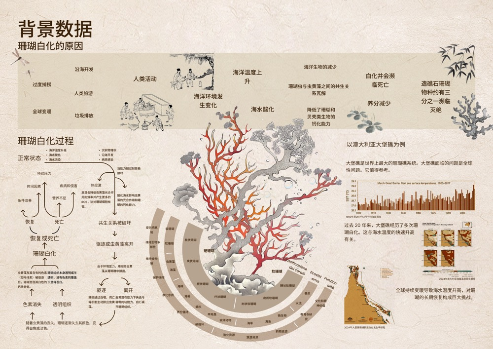
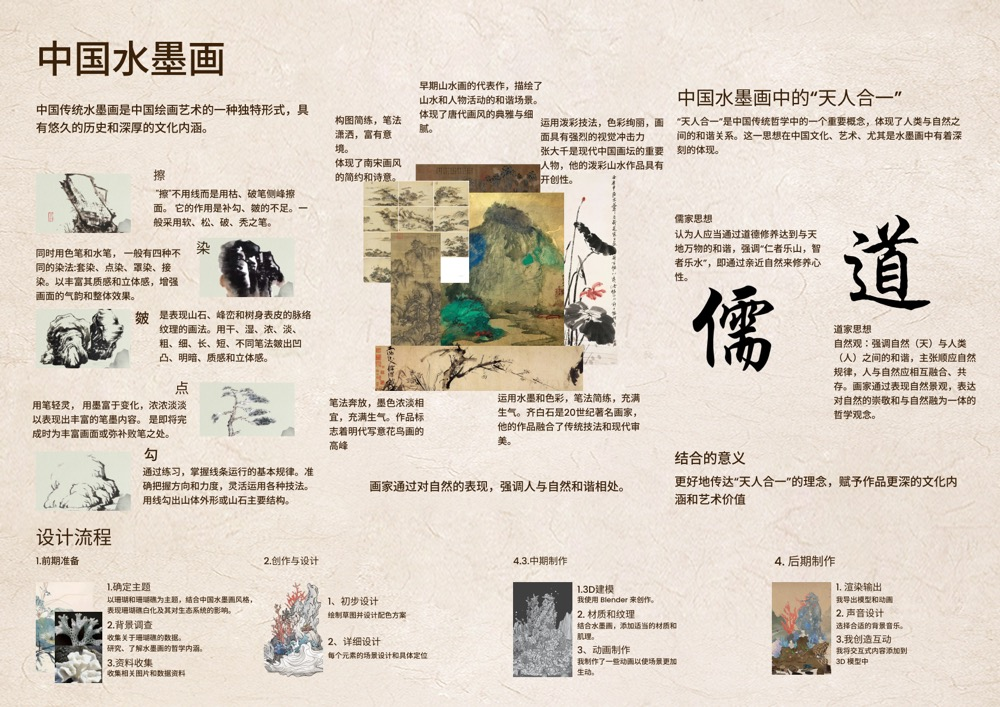
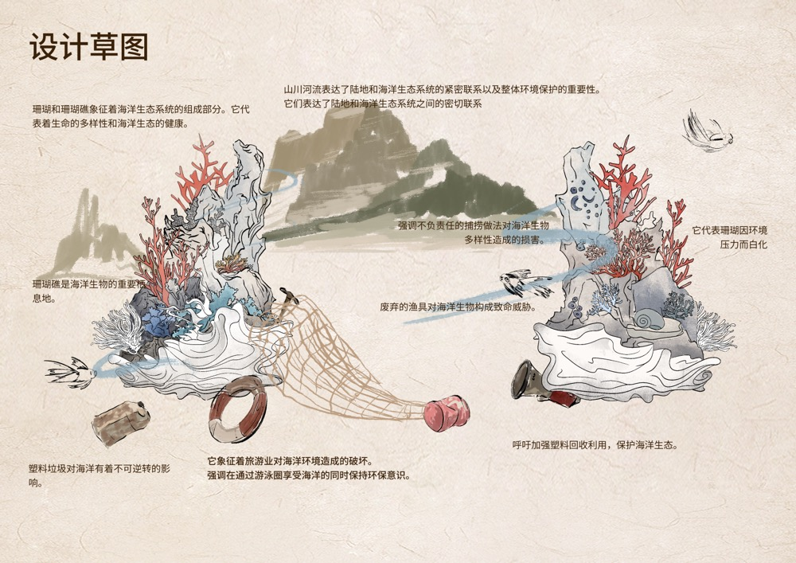
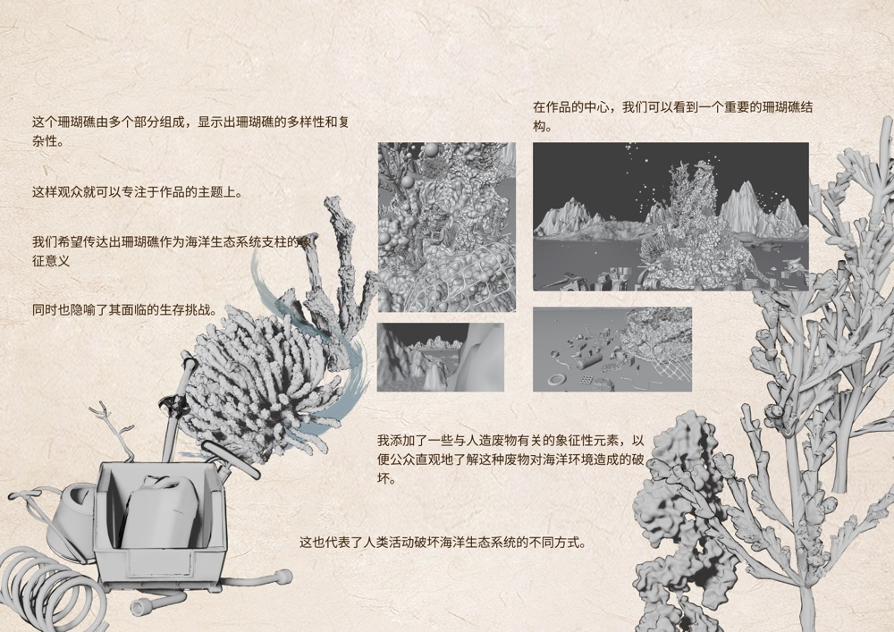

Energia del Corallo
珊瑚奇韵

Project Introduction
《珊瑚奇韵》以珊瑚的自然形态与生态意象为视觉出发点，通过 3D 建模、数字绘制与图像合成等方式，将珊瑚的结构、纹理与色彩转化为具有空间感与叙事性的视觉场景。项目尝试在自然形态与数字媒介之间建立新的视觉关系，使珊瑚从现实中的生态对象转化为一种可被重新观看和感知的数字景观。
Background Research

前期研究从珊瑚的生长结构、形态特征、色彩层次与生态环境展开，通过图像资料与视觉归纳提取可用于后续创作的形态语言，为场景构图、色彩系统与细节设计建立基础。
Research / Context

珊瑚既具有高度复杂的自然结构，也承载着脆弱的生态关系。项目希望通过视觉设计重新组织这些信息，使环境议题不只停留在知识层面，而能够转化为更加直观的视觉体验。
Sketch Development


草图阶段主要探索珊瑚主体、环境元素与画面空间之间的关系，通过不同构图与形态组合确定最终场景的视觉重心与层次结构。
Final Details
最终画面通过局部纹理、颜色叠加与空间层次进一步强化珊瑚的有机感。细节既保留自然形态的复杂性，也通过数字处理形成更具幻想感的视觉语言。